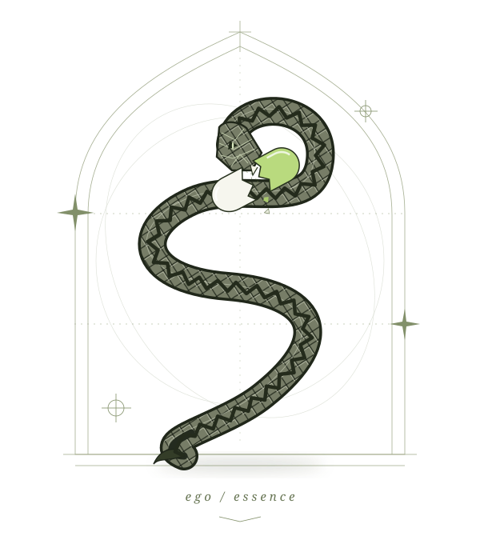

найти суть
Разобраться, кому полезен твой опыт, с каким запросом к тебе приходят и за что тебя выбирают.
позиционированиеличный проект Богдана / с открытым лицом
Личный бренд начинается с человека.
Помогаю экспертам увидеть, что в их работе ценно — и как понятно об этом рассказать.
подлинность · личный бренд · продюсирование

double ego trippin’ — мой проект о разрушении масок и движении к подлинности. О моменте, когда перестаёшь доказывать, каким должен казаться, и начинаешь разбираться, кто ты есть.
Для меня это связано и с продюсированием: услышать человека, понять его опыт и найти форму, в которой его ценность станет видна другим. Гадюка и расколотая капсула — символ этого перехода: привычная оболочка больше не удерживает.
Хочу работать с экспертами, у которых уже есть опыт и желание развивать свой проект. Вот направления, в которых могу быть полезен.
Разобраться, кому полезен твой опыт, с каким запросом к тебе приходят и за что тебя выбирают.
позиционированиеСвязать профиль, контент и предложение, чтобы человек понимал, чем ты можешь ему помочь.
профиль и контентСформулировать гипотезу продукта или способа привлечения и проверить её небольшим шагом.
предложение и спросПредставим эксперта по монтажу: полезные видео смотрят, но об обучении почти не спрашивают. По одному профилю нельзя уверенно назвать причину.
Какой вопрос ты бы проверил первым? Раскрой варианты — у каждого своя задача.
Мой подход: собрать ответы, выбрать обоснованную гипотезу и проверить её небольшим действием. Этот пример показывает ход мысли; он не является клиентским кейсом или обещанием роста заявок.
какую первую задачу можем обсудитьВыбери ситуацию, которая тебе ближе.
Покажу, с чего мы могли бы начать.
Возможно, дело не в недостатке экспертности, а в том, что её ценность пока трудно считать из профиля.
что можно сделать вместе
Одна ясная фраза: кому ты помогаешь, с чем и в каком формате.
Это отправная гипотеза. Что действительно нужно твоему проекту, можно понять только после разговора и знакомства с ним.
Развиваю double ego trippin’ — личный проект о подлинности и становлении. Учусь понимать себя, замечать свои реакции и отвечать за собственные решения. Этот процесс стал основой того, что я хочу показывать в своём блоге.
Сейчас изучаю продюсирование экспертов, разбираю проекты и делаю первые шаги в работе с ними. Мне интересно соединять внимательный разговор с конкретными действиями: понять человека, его опыт и задачу, а затем найти уместный следующий шаг.
Я начал больше разбираться в себе, когда заметил, как много места занимает желание соответствовать ожиданиям, что-то доказывать и выглядеть определённым образом. Появился вопрос: насколько этот образ совпадает с тем, как я поступаю и что для меня действительно важно?
Через самоанализ учусь замечать свои реакции, проверять выводы и брать ответственность за действия. Для меня подлинность начинается с готовности видеть свои противоречия и работать с ними. Из этого процесса вырос double ego trippin’: привычные маски трескаются, и я постепенно узнаю себя.
Хочу, чтобы за моим контентом был виден человек: его принципы, решения, обучение и изменения. Личный бренд даёт мне возможность открыто показывать своё становление — пробовать, ошибаться, переосмысливать и делать следующий шаг.
Мне важно, чтобы доверие складывалось из того, что я говорю и делаю. Поэтому я начинаю с себя: учусь формулировать свои мысли, говорить от собственного лица и связывать идеи с реальными поступками.
В продюсировании меня привлекает сочетание общения, творчества и конкретной задачи: помочь эксперту сделать ценность его знаний понятной другим людям. Мне интересно вникать в проекты, задавать вопросы, искать связь между опытом человека, его аудиторией и предложением.
В этом направлении я хочу развивать самостоятельность и строить своё дело через полезную работу. Сейчас моя задача — учиться на реальных проектах: сначала понимать потребность, затем предлагать посильную помощь и проверять идеи на практике. Так я хочу выстраивать сотрудничество с экспертами.
внимательность к человеку. конкретность в работе.
Посильная первая задача, которую можем обсудить: понять, где человеку сложно разобраться в твоём предложении и сделать следующий шаг.
Посмотрим, кому адресовано обучение, где объясняется его ценность и как заинтересованный человек может связаться с тобой.
Ссылка на профиль, описание обучения и текущая задача. Полезны вопросы учеников и обезличенные примеры обращений, если они есть.
Одна приоритетная гипотеза, конкретное изменение и способ оценить его по доступным данным. Объём работы, сроки и условия обсудим до начала.
Первое знакомство помогает понять задачу. Полноценный разбор и дальнейшую работу согласуем отдельно. Я начинаю практику и открыто обсуждаю границы своего опыта.
обсудить мой проектбез идеального образа. с реальной задачей.
Несколько строк о проекте — уже хорошее начало.